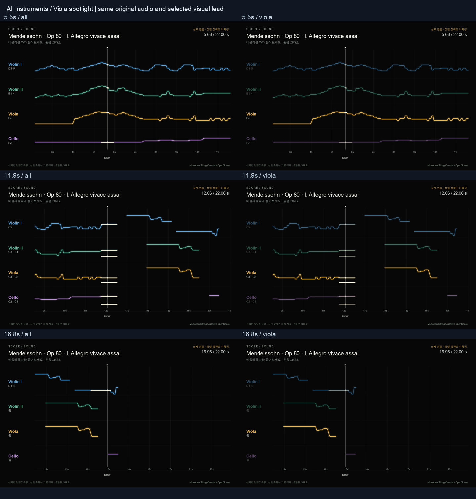

R/R RIBBON ROOM실험 기록 · 이전 결과를 보존한 검토 화면입니다. 새 그래픽 작업은 작업실에서 이어갑니다.
다른 실험 보기
비올라를 따라 들어보기
네 악기 사이에서, 노란 선을 따라가 보세요.
음악을 틀고 ‘전체 보기’와 ‘비올라 따라가기’를 바꿔 보세요.
노란 비올라를 덜 놓치고 따라갈 수 있는지만 보면 됩니다. 다른 악기와 함께 움직이는 관계도 보이는지 느껴보세요.
좋다고 선택한 ‘더 앞당김’을 적용했습니다. 타이밍을 다시 고르거나 시간을 재실 필요 없습니다.
비올라는 선명하게, 나머지 악기는 조금 어둡게 표시합니다. 소리는 같은 실제 사중주 원음입니다. 비올라 소리만 키우거나 분리한 것은 아닙니다.
비올라 강조 영상
영상에도 같은 원음이 들어 있습니다. 영상을 재생하면 위 음악은 자동으로 멈춥니다.
비올라 영상 저장 · 전체 보기 영상 저장
같은 순간의 전체 / 비올라 비교

기록과 세부 설정
B6.1 · 두 버전은 모두 선택한 0.16초 앞당김을 사용합니다. 바뀌는 것은 다른 악기의 선명도뿐입니다. 원래 음표 위치와 곡 데이터는 보존했습니다. 관성·스프링·소리 분리는 적용하지 않았습니다.
표시 설정 · 검증 · 전체/강조 비교 검사 · 화면 조작 검사 · 영상·원음 검사 · 출처
영상은 공유 리본 SVG를 native Agg로 변환해 생성했습니다. 브라우저 캡처가 아닙니다. 임시 DTW 정렬은 그대로이며, 앞당김은 사용자가 고른 표시 시각 조정입니다.